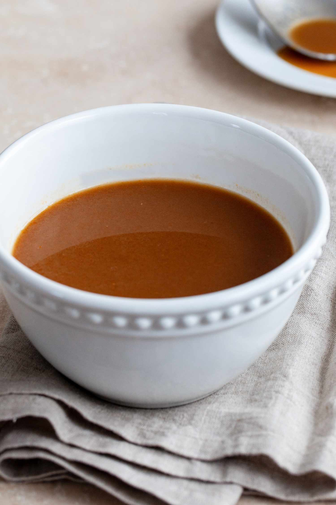
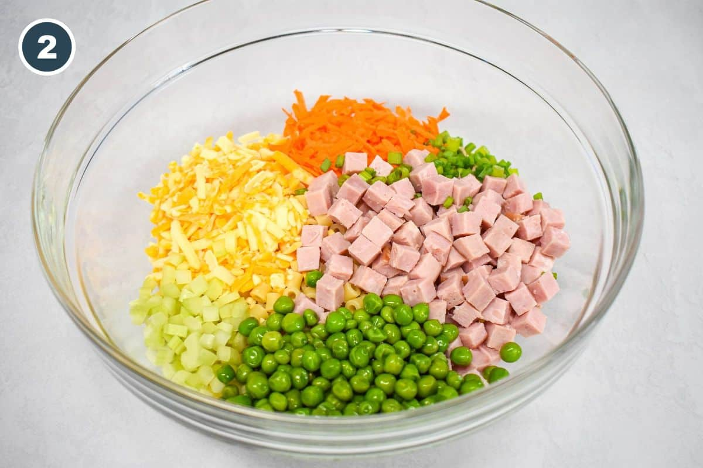
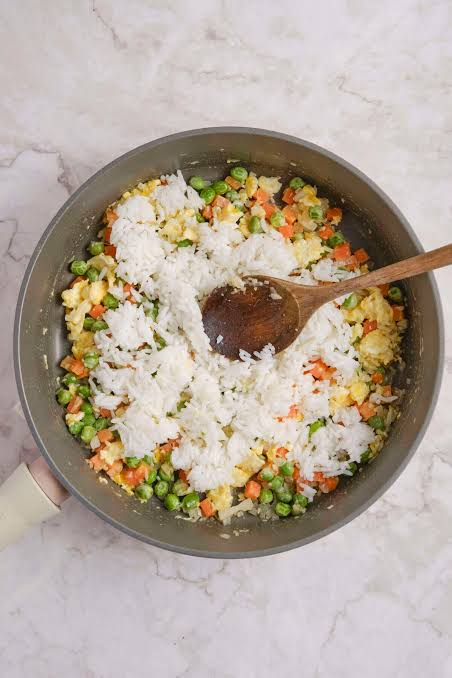
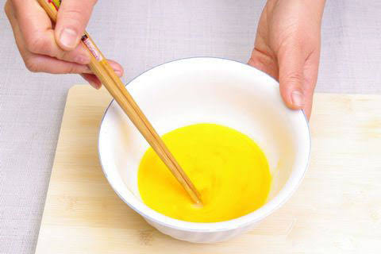
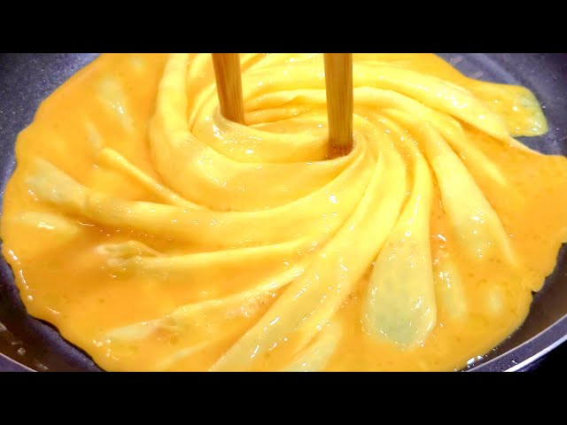
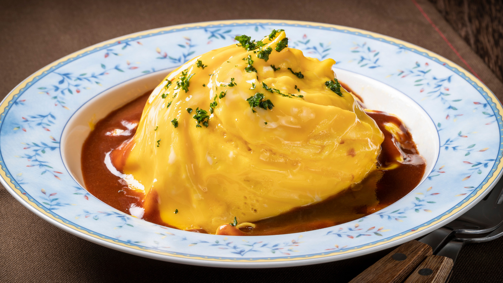

Images












This website is clean, minimal, and easy to navigate as recipes are separated by ingredients, types, and even seasons. It also includes a lot of different sections and recommendations such as dietary restricted menus or popular recipes. The website allows people who already know what they want to easily navigate to their recipe, and those who want to look around various options for a recipe.
EpicuriousI thought it was fun how this website works almost like a magazine or news site that includes recipes. I especially liked the hierarchy with the centered recipe at the top, the different sections including recipe articles or dietary preferences, which makes the website interesting to scroll through just on a regular basis, not only when cooking. I also appreciate how the website deisgn feels very clean, clearly separated, and fairly responsive to user input / scroll / hover.
SuperCookThis website was really interesting to me because it specifically recommends you recipes based on ingredients you select / have in your kitchen. It also has search filters available like dietary preferences, recipes that include videos, recipe durations, etc. I appreciate how easily organized the website is, and how practically I would use it especially as someone who's not a very experienced or avid cooker.
This website had a very interesting design for multiple reasons, but I was most interested in the minimal typography and grid system, and how they laid out images with multiple different sizes.
MobbinI also liked the grid system in this website, especially how much it changes up throughout different sections and how responsive it feels as you scroll through.
McMasterI thought the level of subdivision / organization in all of the information this website contains was very interesting. It's so simply designed that anyone would be able to find what they were looking for pretty easily.